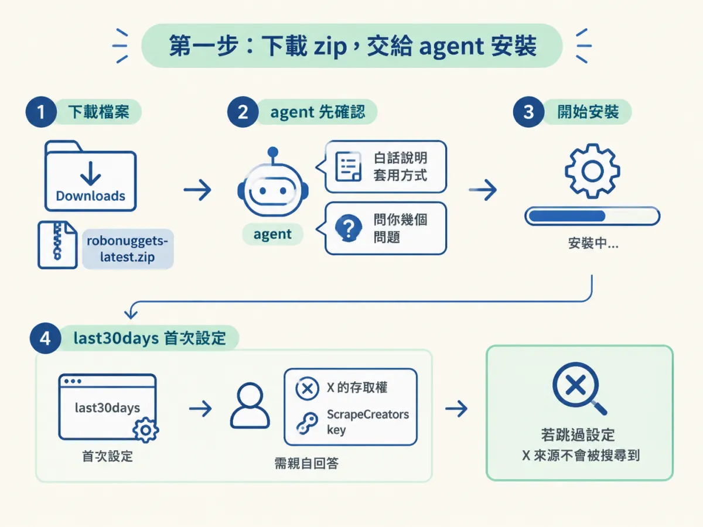
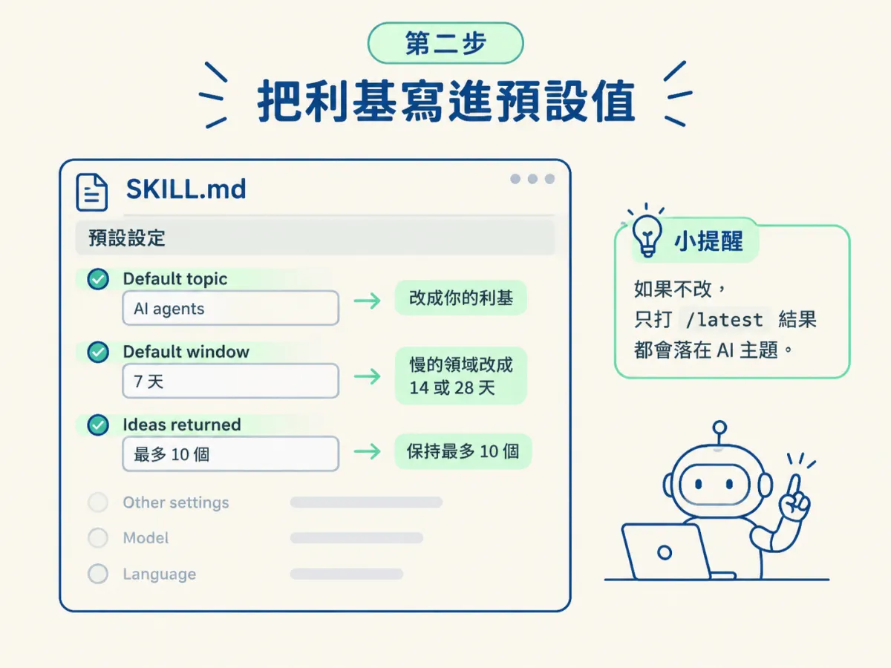
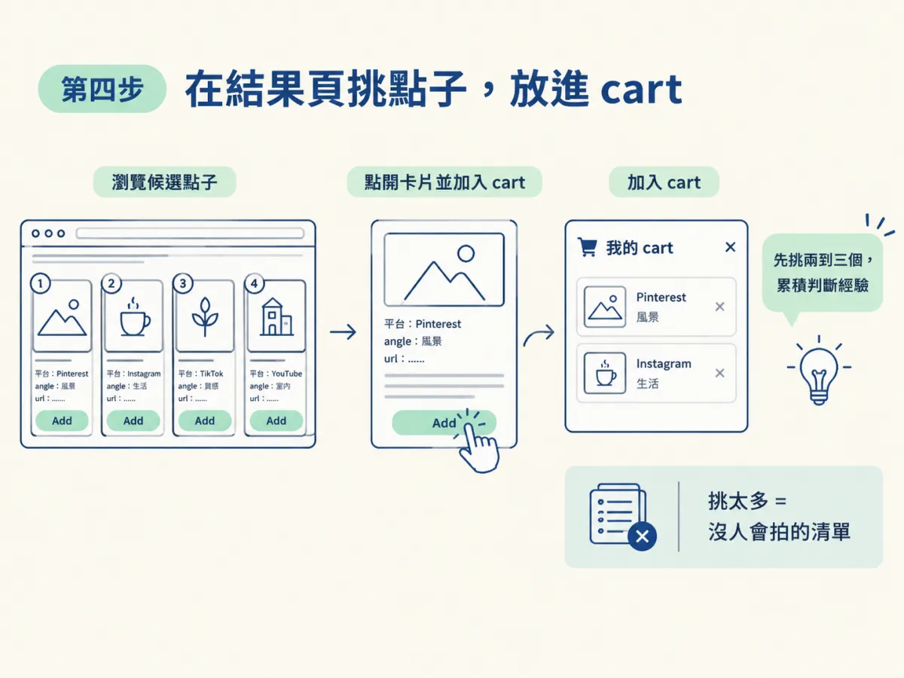

/latest前面幾課你已經知道點子該從哪裡來，也知道哪些來源最早。但如果每次都要自己打開十幾個網站、一個一個翻，你很快就會放棄。研究習慣常常就是這樣斷掉的：第一週很認真，第二週只剩幾個收藏，到了第三週就沒有人再打開。
這一步要把前面的做法變成一個指令。輸入 /latest，它會去查過去七天的消息，最多整理出十個候選點子，每個都附一個連結。不學會這一步，你的井只會留在筆記裡，永遠不會變成一支影片的題目。
安裝 /latest skill，把預設利基換成你的領域，跑出一次結果，並拿到一組帶真實連結的候選點子。
robonuggets-latest.zip。先從課程頁面下載 zip，並放在下載資料夾。課程提供的安裝提示詞預設這個檔案在 Downloads 裡，所以放在那裡最省事。接著把下面這段提示詞貼給你的 agent。提示詞是英文原文，課程直接提供給學員使用：
"I'm giving you a resource called Latest. It's in the file robonuggets-latest.zip (in my Downloads folder unless I say otherwise). Follow the README to set it up. Recommend how it would best apply to our setup in plain language, and ask me a few questions to clarify my intent before you install it."
這段提示詞有一個重點：它要求 agent 在安裝前，先用白話說明它打算怎麼套用到你的環境，並問你幾個問題。不要急著全部回答「好」。先看它的建議，確認它理解的是你要的內容，再讓它動手。
第一次跑時，底層的研究工具 last30days 可能還要先做一次設定。它會問你 X 的存取權，以及免費的 ScrapeCreators key。這些問題要你親自回答。原因是 agent 無法替你同意 cookie，如果略過這一步，X 這個來源就不會被搜尋到。

安裝完成後，skill 的 SKILL.md 最前面有一塊預設設定區。課程為了讓它開箱即用，把預設主題設成了 AI agents，這只是一個範例。如果你不改掉它，只打 /latest 而不加主題，結果就會落在 AI 上，跟你的領域沒有關係。
---
name: latest
description: Finds what is popping in a niche in the last 7 days and turns it into up to 10 ranked content ideas, …
argument-hint: "[topic] [--days N]"
---上面是這個 skill 的基本資訊。name 是指令名稱，argument-hint 告訴你輸入 /latest 後面可以加什麼，例如主題與天數。預設設定區則長這樣：
- Default topic: AI agents (an example, so it works out of the box. Change it to your niche, for example "home gym equipment" or "crochet patterns")
- Default window: 7 days (a slower niche may need 14 or 28)
- Ideas returned: up to 10
…
- Open the results page when done: yes (no = write it only)要改的主要有三項。第一是 Default topic，換成你的利基，例如「家用健身器材」或「鉤針圖樣」。第二是 Default window，預設是七天。如果你的領域變動比較慢，七天可能找不到足夠的東西，就改成十四天或二十八天。第三是 Ideas returned，預設最多十個。

如果你不想手動改檔案，也可以直接對 agent 說一句「把我的 /latest 利基設成家用健身器材」，它會替你寫進去。
/latest現在可以跑了。輸入 /latest 會用預設的利基；如果你想臨時換一個主題，就在後面加上它，例如 /latest home gym equipment。要拉長時間窗，就直接說「last 14 days」或「last 28 days」。
課程說一次大約需要兩到三分鐘，但第一次跑會慢一些，因為要完成前面說的設定。跑完後，agent 會打開一個結果頁。結果頁的每一張卡片，大致會有下面這幾個欄位：
"items": [
{
"id": "https://www.reddit.com/r/medicine/comments/1x03ipt/",
"rank": 1,
…
"url": "https://www.reddit.com/r/medicine/comments/1x03ipt/",
"angle": "What the user would say and show.",
"why": "Why it helps the audience, or why now.",
…
"check": "opened",這幾個欄位各自有用處。angle 是你可以說什麼、拍什麼，它是點子的核心。why 說明它為什麼對觀眾有用，或為什麼現在值得講。url 是連結，這是點子能不能被查證的關鍵。check 的意思是：opened 表示 agent 這次有真的打開頁面確認；raw 表示連結來自它保存下來的原始研究檔，這次沒有另外打開。
看到 raw 不代表它有問題，但你要自己點一下確認。課程的做法就是讓你檢查，而不是全盤相信。
如果結果少於五個，頁面會自動打開 Tips 面板，建議你把利基放寬一點，或把時間窗拉長到十四或二十八天。如果你不希望每次跑完都自動打開頁面，可以在執行時加上不自動開頁的選項。頁面還是會寫出來，只是不會打開：
python scripts/fill.py results.json --no-open結果頁可以搜尋、篩選與排序。按下 / 會跳到搜尋框，你可以依平台與來源篩選，也可以依排名、最新或互動數排序。點開卡片，能看到角度、為什麼有用，以及所有的數字與連結。
看到想拍的點子，就按下卡片上的「Add」放進 cart。cart 會留在瀏覽器裡，重新整理也不會消失。新手的做法是先挑兩到三個，因為你還沒有累積判斷的經驗。挑太多，最後會變成一份沒有人會去拍的清單。

做到這裡，你手上就有了一批真實可查的素材。下一步要把它們寫成你會說的腳本，並把你的選擇回饋給 /latest。
/latest 只是把第一手來源的研究自動化。預設利基要換成你的，每個連結都要點開確認，cart 也只放你真的會拍的點子。
安裝 /latest 時，先讓 agent 說明它的套用方式，並親自回答 X 與 ScrapeCreators 的設定問題。接著把預設利基換成你的領域，跑出一次結果，點開幾個連結確認，最後挑兩到三個放進 cart。